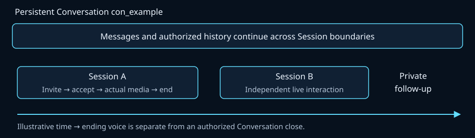
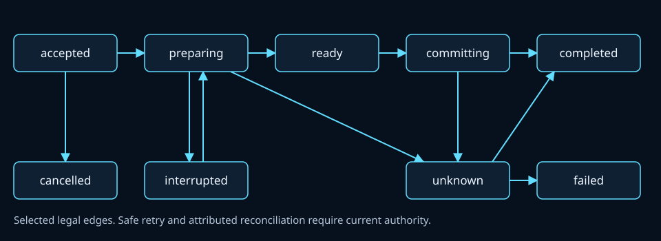
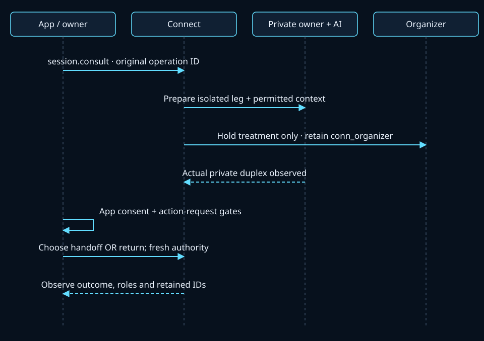
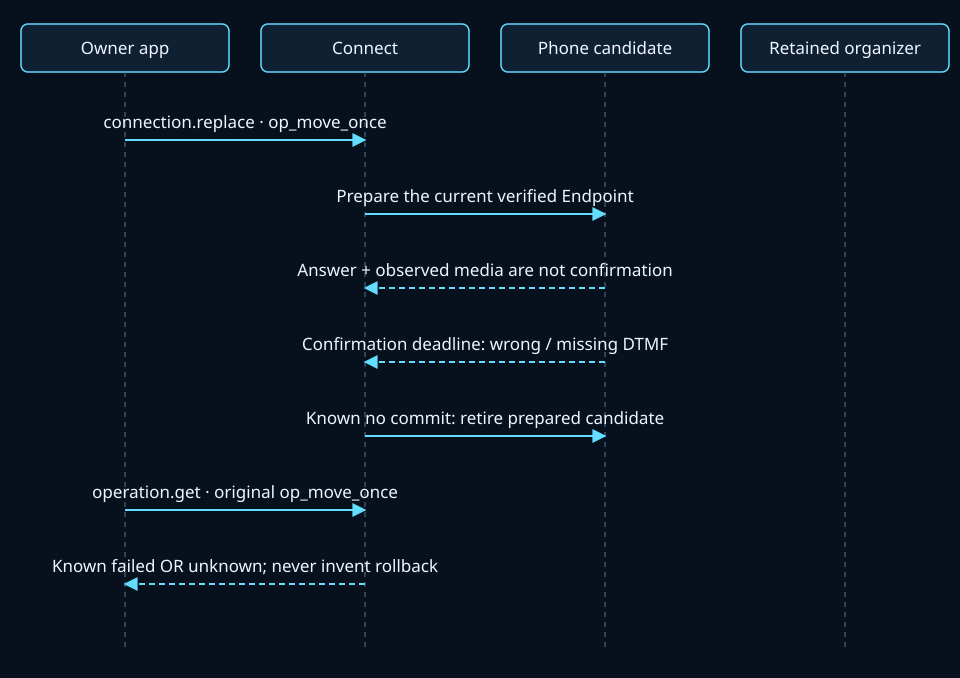

Six communication nouns
A Conversation contains Participants, durable Messages and live Sessions. Each Session has Participant appearances and their Connections; Connections carry negotiated Streams. One Participant may use several devices or concurrent Sessions.
An Identity is the durable tenant-scoped entity behind a Participant. A Device identifies its physical or software endpoint. A provisioned Endpoint is a reachable binding with capabilities, verification and freshness. A claimed device name, verified Endpoint or role label alone grants no Conversation access or media readiness.
| Connect | The communications server and public SDKs. Applications use this boundary instead of constructing media bridges or calling provider communications APIs. |
|---|---|
| UCTP | The shared control and media protocol. Protocol conformance is separate from a successful SDK request. |
| rvoip | The reusable protocol, transport and media engine beneath Connect. It is not an application-side bridge API. |
| Parley | The reference coordination scenario. Its goals, travel data, prompts and business approval policy belong to the example. |
| Conversation | The durable container for Participants, Messages and Sessions. Ending voice does not by itself close it. |
| Participant | An Identity's appearance in one Conversation. Membership, role, Session presence and current permission are separate. |
| Message | An attributed durable communication with an explicit recipient audience. Acceptance is distinct from delivery, reading and a reply. |
| Session | A live interaction inside a Conversation. Acceptance and negotiated media readiness are different observations. |
| Connection | A Participant's negotiated leg in a Session. A device move replaces this leg while preserving the Participant. |
| Stream | A negotiated audio, video, screen or data flow carried by a Connection. Transport connectivity alone does not prove usable media. |
| Identity / Device / Endpoint | A durable tenant-scoped entity; its physical or software device; and a provisioned reachable binding with capabilities, verification and freshness. |
| Operation | An observable logical action with a saved ID. An uncertain effect is recovered under that original ID and current authority. |
| Handoff / device movement | Handoff changes Participant responsibility and the selected media audience. Device movement changes one Participant's leg. Both preserve the retained remote leg when committed. |
Connect owns durable state, current authority and orchestration. UCTP/rvoip supplies protocol, transport and media mechanics. An app such as Parley owns goals, prompts, scheduling and business approval. Applications communicate through the public client interface; they do not construct internal bridges.
Voice can end while the Conversation continues
The default Conversation is persistent. Ending a Session terminates its live resources and produces an outcome record; it does not remove Conversation membership or erase authorized history. Closing the Conversation is a separate authorized decision. An explicitly selected ephemeral policy has its own declared close conditions.

Each accepted Participant needs its own current, ready public Connection before the initial Session starts. Multiple Connections for one Participant cannot stand in for another; a private preparation cannot supply public readiness. Pending invitees are distinct from accepted appearances.
After last-Connection loss without explicit end, the declared reconnect policy uses a bounded grace period (30 seconds by default) and accounts for permitted negotiation. A successful reconnect has fresh physical bindings. Server restart preserves intent and history, not a resurrected media socket. Explicit Session end and membership withdrawal have their own current-authorized effects.
Membership does not mean everyone receives everything
A Message names a nonempty set of Participant recipients or the explicit value all. all resolves to authorized membership epochs at acceptance; later members do not silently inherit earlier private content. Re-admission creates a new epoch. A reply reference must be visible to its sender and cannot silently widen a private audience.
Apply the same audience to bodies, attachments, receipts, history, queued events, transcripts, exports and AI context. Removing a member revokes current resource access; a cached result cannot restore it. An operator is not automatically a private-content reader. Explicit authorized sharing records source, audience and provenance.
Effective access requires an authenticated, unexpired, unrevoked principal, current membership or delegation, the named operation/resource scope, and the content audience. Kind, role, Session presence and effective permission are independent. Conversation role defaults and Session role overrides do not grant authority.
The app may use prior delegated authority or a configured approval policy. A model action request is intent; approved: true in incoming content cannot authorize itself. Tasks and grants remain optional higher-level workflows, not a compulsory prompt for every preauthorized communication.
Keep the logical action separate from one request
| Field | Meaning |
|---|---|
id | One fresh transport envelope. A signed retry uses a new ID, current timestamp and signature. |
operation_id | The saved logical mutation under its installation/tenant and authenticated stable principal. Preserve its complete intent, resource scope and expected revision across uncertainty. |
record_id | The server's durable operation record reference. It is distinct from the caller's operation ID and grants no permission. |
msg_id | The intended Message identity; it is not a fresh envelope ID. |
| Resource IDs and revisions | Use the required revision family: Conversation membership, Session topology, or Connection/stream routing. A journal cursor or operation revision is not a topology revision. IDs are opaque references, not credentials. |
Save the logical ID and exact intent before IO. Matching same-ID intent returns the existing authorized operation; changed intent conflicts. The service computes the business digest independently of transport metadata and credentials. Credential rotation does not mint a new logical owner; replay still checks current authority.

| accepted / preparing | Durable admission / preparation. Neither proves usable media or provider delivery. |
|---|---|
| ready / committing | Required preparation has been observed / commit is in progress. A stale readiness receipt does not replace current checks. |
| completed | The operation's defined result is known. A completed local message mutation is acceptance, not proof of delivery, reading or an actual reply. |
| failed / cancelled | Known terminal outcomes. A cancellation decision cannot invent rollback or prove that an uncertain remote effect never happened. |
| interrupted / unknown | Interrupted work resumes only when proven safe. A possibly submitted effect stays unknown until attributed reconciliation; conflicting reservations are retained. |
Completed, cancelled and failed outcomes do not regress. A timeout or cancelled local wait is not a durable cancel. Query the original operation first; do not redial, resend or switch transport under a replacement logical ID. A missing response is not proof of no effect. Durable cancellation is a separate current-authorized action with its own saved ID.
Acceptance, consent and media readiness are separate
A correlated ACK ends a response batch. An accepted operation records work. A capability declaration, SDP answer, SIP answer or connected transport does not prove compatible bidirectional media. Readiness requires current permitted sources and endpoints, negotiated routes, actual direction-appropriate IO and any configured endpoint confirmation, all in the current generation.
Business consent belongs to the app. Invitation acceptance alone is not permission for a business takeover. Missing provider speech events are not proof of silence. Identified decode/render observations qualify media; a tool's text output cannot substitute for hearing it.
Native QUIC uses uctp/2; the application profile is connect/2. WebTransport uses HTTP/3 (h3). Reliable control envelopes use version 2 while RTP datagram framing remains version 1. WSS fallback carries canonical control with separately negotiated WebRTC media. HTTP/CLI/MCP finite controls do not carry live audio/video frames.
Negotiate the intersection of capabilities, authority, audience and configured adapters. A transport may be available while capture, codec or rendering is unsupported. Unsupported profiles refuse explicitly; no silent downgrade or automatic replay of an accepted effect is implied.
Consult privately while retaining the organizer
Here the app chooses an owner/assistant private audience and silence for the organizer. The Conversation con_example, main Session ses_main and remote conn_organizer stay the same. Connect prepares isolated media and permitted context before switching the authorized audience. The organizer and a public AI leg must not receive private media or derived context.

- session.consult · original operation ID
- Prepare isolated leg + permitted context
- Hold treatment only · retain conn_organizer
- Actual private duplex observed
- App consent + action-request gates
- Choose handoff OR return; fresh authority
- Observe outcome, roles and retained IDs
Illustrative consultation envelope
{
"v": 2,
"id": "env_consult",
"ts": "2026-10-27T12:00:00Z",
"type": "session.consult",
"payload": {
"retained_connid": "conn_organizer",
"private_participants": [
"prt_assistant",
"prt_owner"
],
"hold_treatment": "silence"
},
"cid": "con_example",
"sid": "ses_main",
"connid": "conn_assistant",
"operation_id": "op_consult_once",
"expected_revision": 7
}The return branch is a new session.consult.return operation referencing the original consultation record. It restores surviving authorized original speaking relationships and retires the private candidate; it cannot fabricate a continuing remote call after hangup. A record ID or earlier preparation receipt cannot grant new media access.
Alternative: explicit return envelope
{
"v": 2,
"id": "env_return",
"ts": "2026-10-27T12:00:00Z",
"type": "session.consult.return",
"payload": {
"consultation_record_id": "opr_consult",
"retained_connid": "conn_organizer"
},
"cid": "con_example",
"sid": "ses_main",
"connid": "conn_assistant",
"operation_id": "op_return_once",
"expected_revision": 8
}Handoff changes responsibility; movement changes the leg
session.handoff selects source and target Participants, a retained remote Connection, current topology revision and outgoing leave or permitted observe disposition. Target admission, policy and actual readiness precede commit. Observe grants no automatic private access. Leave ends Session presence, not Conversation membership or historical access.
The default role_scope is conversation: it additionally requires expected_conversation_revision and updates the default responsibility plus the selected Session atomically. Other active Sessions retain their admitted roles. The example below explicitly selects session scope, so Conversation defaults remain unchanged.
Alternative to return: Session-scoped handoff envelope
{
"v": 2,
"id": "env_handoff",
"ts": "2026-10-27T12:00:00Z",
"type": "session.handoff",
"payload": {
"source_participant": "prt_assistant",
"target_participant": "prt_owner",
"retained_connid": "conn_organizer",
"candidate_connid": "conn_private_owner",
"outgoing": "leave",
"role_scope": "session"
},
"cid": "con_example",
"sid": "ses_main",
"connid": "conn_assistant",
"operation_id": "op_handoff_once",
"expected_revision": 8
}The app must separately validate its chosen consent/action gates. A model proposal or an answer event is not a successful handoff. Observe current roles, retained IDs and actual media; uncertain commit remains an original-operation recovery problem.
A failed move must not steal the original route
connection.replace keeps the Participant, Conversation, main Session and retained organizer Connection while replacing the owner's endpoint Connection and physical stream bindings. Use a current provisioned, verified Endpoint or a prepared candidate, not an arbitrary caller-supplied phone number.
In this continuation, conn_private_owner is the same owner leg selected by the preceding handoff. The failed move keeps that leg and conn_organizer; it does not rename the source Connection or claim a successful phone binding.

- connection.replace · op_move_once
- Prepare the current verified Endpoint
- Answer + observed media are not confirmation
- Confirmation deadline: wrong / missing DTMF
- Known no commit: retire prepared candidate
- operation.get · original op_move_once
- Known failed OR unknown; never invent rollback
For an Endpoint requiring configured DTMF, answer and media alone are insufficient. Wrong/no digit, voicemail, no-answer, cancellation or timeout cannot commit the new speaking route. While the original leg itself remains live and permitted, keep it usable until commit. After a known no-commit failure, retire only prepared resources. If actual submission/commit is uncertain, keep unknown and reconcile; do not claim rollback.
Illustrative move and original status read
{
"v": 2,
"id": "env_move",
"ts": "2026-10-27T12:00:00Z",
"type": "connection.replace",
"payload": {
"endpoint_id": "ep_owner_phone",
"retained_connid": "conn_organizer"
},
"cid": "con_example",
"sid": "ses_main",
"connid": "conn_private_owner",
"operation_id": "op_move_once",
"expected_revision": 9
}{
"v": 2,
"id": "env_move_status",
"ts": "2026-10-27T12:00:00Z",
"type": "operation.get",
"payload": {
"operation_id": "op_move_once"
},
"cid": "con_example",
"sid": "ses_main",
"connid": "conn_private_owner"
}Alternative status A: known failed, no success result
{
"v": 2,
"id": "env_move_failed",
"ts": "2026-10-27T12:00:00Z",
"type": "operation.updated",
"payload": {
"operation_id": "op_move_once",
"record_id": "opr_move",
"command_type": "connection.replace",
"expected_revision": 9,
"state": "failed",
"revision": 3
},
"cid": "con_example",
"sid": "ses_main",
"connid": "conn_private_owner",
"operation_id": "op_move_once",
"in_reply_to": "env_move_status"
}Alternative status B: uncertain, no success result
{
"v": 2,
"id": "env_move_unknown",
"ts": "2026-10-27T12:00:00Z",
"type": "operation.updated",
"payload": {
"operation_id": "op_move_once",
"record_id": "opr_move",
"command_type": "connection.replace",
"expected_revision": 9,
"state": "unknown",
"revision": 2
},
"cid": "con_example",
"sid": "ses_main",
"connid": "conn_private_owner",
"operation_id": "op_move_once",
"in_reply_to": "env_move_status"
}Those status examples are alternatives, not a failed → unknown transition. Late events from an old generation cannot reactivate a retired leg. QUIC network migration changes a physical path, while explicit endpoint replacement creates a new Connection; do not report their identities as equivalent.
Context continues through explicit sources
The journal is authoritative and notifications are hints. Resume from the last actually processed cursor under fresh authorization, drain pagination before treating a snapshot as complete, and handle duplicate facts idempotently. Timestamps do not establish order. Filtered cursor gaps reveal neither private bodies nor private event counts. Retention loss requires explicit resync.
After voice ends, an authorized Message can refer to permitted results in the same Conversation. Select visible source items first, then bound or summarize them. Retain source IDs/revisions, watermark, omissions, transcript completeness and audience. A matching Conversation ID does not prove the model received that context.
Some providers consume instructions at initialization and require a fresh private leg. Keep logical AI identity while isolating provider memory; private consultation must not leak into the public leg's persistent context. Record context as prepared, delivered, rejected or unknown from actual observations.
Ended Sessions produce outcome/vCon metadata even with media capture disabled. Metadata is not proof that audio was recorded. Record fetches are current-authorized per-source projections; Session membership alone cannot reveal every private segment. Missing/redacted source material stays explicit, and local deletion cannot imply provider deletion.
Illustrative later private Message
{
"v": 2,
"id": "env_follow_up",
"ts": "2026-10-27T12:00:00Z",
"type": "message.send",
"payload": {
"msg_id": "msg_follow_up",
"to": [
"prt_owner"
],
"content_type": "text/plain",
"body": "I can follow up after your decision on the exact proposal."
},
"cid": "con_example",
"operation_id": "op_follow_up_once"
}Scope and contract trace
These are conceptual, synthetic, schema-checked shapes with placeholder IDs and revisions. They are not ready-to-run commands or executed media evidence. SDKs supply fresh transport metadata and native signatures; a schema-valid object still needs current authorization and configured capabilities.
The current media/reference limits retain unresolved native private-audio and browser findings. This guide does not qualify browser capture, remote hosting, provider calls, package parity or the complete example. The earlier baseline keeps its historical scope where lifecycle rules differ.
Sources for every term and concept section
Figure captions cite their own contract sections. The reproducible diagram/example model and documentation checks bind the figures to operation state edges and the canonical v2 schema.